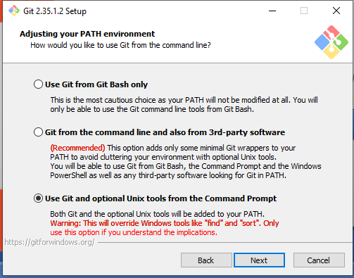

Computer Setup
Contents
Computer Setup¶
In this class we will use several tools, which you need to have installed on your laptops.
Python (required)
Git (required)
Chrome (recommended, alternatively get Firefox from Mozilla)
VSCode (recommended)
Windows terminal (recommended for Windows users)
In addition, you need to create a Github account.
Installing Python with Anaconda¶
There are different ways to install Python and the packages one needs. We will do that using Anaconda which includes a large number of packages used in scientific computing.
It also comes with a package manager conda used to keep packages up to date, and install other packages we need.
Go to Anaconda homepage and download the graphical installer for Anaconda Individual Edition for your operating system.
Install Anaconda with Python 3.9 following the on-screen instructions.
Important
Accepts the defaults and take note of the location where Anaconda will be installed. This will help you with the setup of Windows Terminal (see below).
Open the Anaconda prompt and type
conda update conda
Press
yto procees and after it is done type again
conda update conda
This updates the package manager itself. Next, update the the installed packages by typing
conda update --all
Watch the Getting started with Anaconda individual edition video (Note: this requires creating an account with anaconda.cloud)
Installing Git¶
If you are on a Mac or Linux machine you already have Git installed. If you are on Windows, you have to install it by following the instructions here.
Note
During the installation, I suggest going with the recommended options, except when asked for Adjusting your PATH environment, where I recommend that you select the last option: Using Git and optional Unix tools from the Command Prompt. This will let you use Unix style command when using the terminal.

Configuring Git¶
Open Git Bash and tell git your name and email address.
git config --global user.name "YOUR NAME"
git config --global user.email "YOUR EMAIL ADDRESS"
Other sensible settings, the first has to do with the way Git recognizes and encodes line endings, and the second is about what to do when there are changes to a file coming from two or more different computers
git config --global core.autocrlf true
git config --global pull.rebase false
The --global flags means that these specifications work for all of your repositories. You can check your settings with
git config --list
Set up a GitHub account¶
Go to http://github.com/ to get an account. You should register with your academic email address so you get free private repositories as academics.
Set up your token¶
You will need to set up a token to be used to access GitHub via the command line. To do so, follow these instructions.
Complete the Official Intro to Github lesson¶
Install VSCode¶
Go to https://code.visualstudio.com/ and click the download button, then run the .exe file.
Install Windows Terminal¶
Go to https://docs.microsoft.com/en-us/windows/terminal/install and follow the instructions.
find the location of “Continuum/anaconda3/Scripts/activate.bat” and “Continuum/anaconda3/Menu/anaconda-navigator.ico” on your computer
Click “Open JSON file” and add a new profile to the list of profiles, for example,
{
"colorScheme": "One Half Dark",
"commandline": "cmd.exe /K path-to-activate.bat",
"guid": "{4e4eeec3-d124-4292-b352-ed3751a91092}",
"hidden": false,
"icon": "path-to-anaconda-navigator.ico",
"name": "Anaconda prompt",
"startingDirectory": "C:\\Users\\your-user-name"
}
On my computer the profile looks like this
"profiles":
{
"defaults": {},
"list":
[
{
"colorScheme": "One Half Dark",
"commandline": "cmd.exe /K C:\\Users\\eeu227\\AppData\\Local\\Continuum\\anaconda3\\Scripts\\activate.bat",
"guid": "{4e4eeec3-d124-4292-b352-ed3751a91092}",
"hidden": false,
"icon": "C:\\Users\\eeu227\\AppData\\Local\\Continuum\\anaconda3\\Menu\\anaconda-navigator.ico",
"name": "Anaconda prompt",
"startingDirectory": "C:\\Users\\eeu227"
}
Directory structure¶
In a directory of your choice (such as C:\Users\YOUR-USER-NAME\Documents\), create a new directory called econ108 in which create an empty directory called homeworks